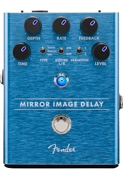
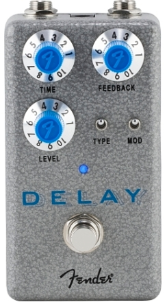

There's no denying the power of a good delay; ranging from subtle to smashing, this ambient effect is one of the cornerstones of modern music. The Mirror Image Delay brings this atmospheric effect to your rig, giving you the ability to create depth with a simple slapback or develop an epic soundscape with modulated repeats. Digital, Analog, and Tape modes - each with two voicing variations - make this expressive and inspiring pedal indispensable. It even has the option to add a dotted-eighth note for those Irish-inspired washes of sound. The delay tails continue when the pedal is bypassed, ensuring a natural sound.
In short, a delay pedal records a guitar or bass signal and plays it back. Delay signals get measured in milliseconds, so it takes a quick millisecond “snippet” of the sound and repeats it.
A delay pedal is essential for guitarists and bass players of all levels. Delay can make guitar lines thicker, fill the dead space, or work as an instrument in its own right. Think U2’s “Where the Streets Have No Name,” Pink Floyd’s “Echoes,” or any Rage Against the Machine or Audioslave solo. Tom Morello fills in the gaps between guitar lead lines and uses the delay as a percussive instrument.
In the most basic terms, a delay pedal takes the signal, records it, usually measured in milliseconds, and plays it back to you several times. The scientific explanation is that delay duplicates the signal and plays back the copy after a time interval in milliseconds. Delay pedals generate an echo effect that can go from slapback, instant repeat, to drawn-out repeats.
When a guitarist plays between the repeats, the delay pedal stores that signal and then plays it back, creating an overlapping effect. The result can be as simple as a single echo or as complex as a cascading waterfall of sound that slowly oscillates into itself, creating a wall of sound. Think of the “Karma Police” outro by Radiohead.
Delay pedals take a millisecond snippet of the guitar signal and repeat it back. Loop pedals take any number of seconds or minutes, record it, and then play it back. The most significant benefit of looper compared to delay is the ability to control play, overdub, and stop freely and to repeat the recorded sounds without a decrease in level or sound change.
Technically, there are three main types of delay: tape, analog, and digital. Within these types, there are many styles. For example, analog delay often includes echo and tape delay. Digital delay includes dynamic delay, pattern delay, and other types. Key differences lie in how many repeats they provide and whether they repeat linearly or have trails and degradation. Let’s explore these three delay types.
Tape delay, sometimes called tape echo delay, once used magnetic tape to record and playback the signal. This style has warm, slightly unpredictable repeats. The sound gradually degrades as the delay continues, reflecting the age of the tape.
Analog delays, or Bucket Brigade delays, like the DM-2W and the DM-101, use Bucket Brigade Devices (BBDs) to create warm repeats. They provide a near-perfect replication of a signal slightly degrading over time. The benefit of an analog delay is that one gets a warm, rich delay sound with more predictable and re-creatable results.
Digital delays, such as the DD-200, offer a more precise, pristine signal repeat that does not degrade in quality. Digital delays often come with various modes to recreate different styles of delay. These include replications of analog and tape delays.